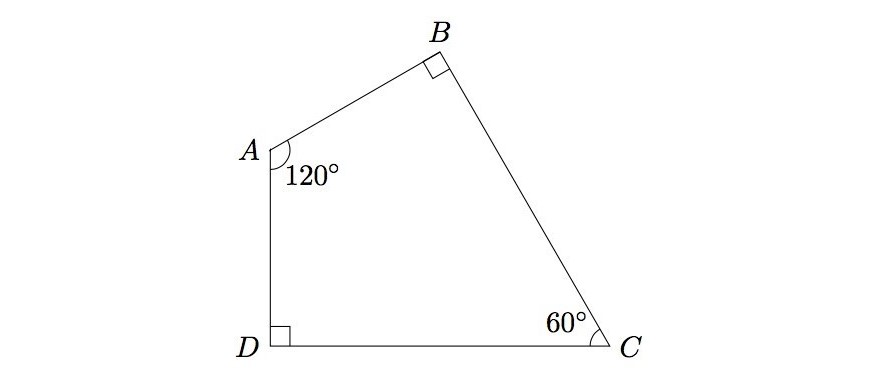
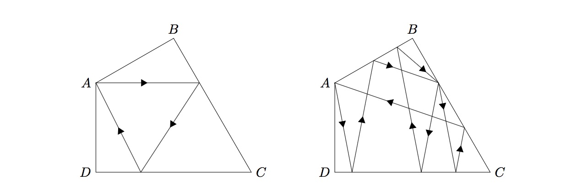
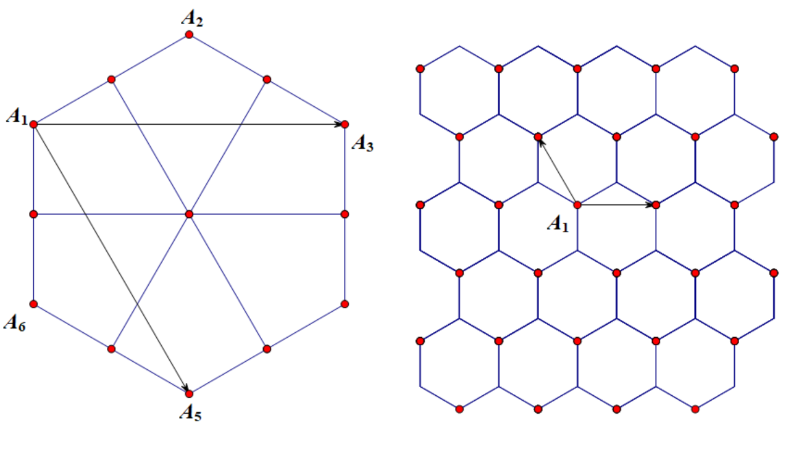

Project Euler 786
Project Euler 786
题目
Billiard
The following diagram shows a billiard table of a special quadrilateral shape. The four angles \(A, B, C, D\) are \(120^\circ, 90^\circ, 60^\circ, 90^\circ\) respectively, and the lengths \(AB\) and \(AD\) are equal.

The diagram on the left shows the trace of an infinitesimally small billiard ball, departing from point \(A\), bouncing twice on the edges of the table, and finally returning back to point \(A\). The diagram on the right shows another such trace, but this time bouncing eight times:

The table has no friction and all bounces are perfect elastic collisions.
Note that no bounce should happen on any of the corners, as the behaviour would be unpredictable.
Let \(B(N)\) be the number of possible traces of the ball, departing from point \(A\), bouncing at most \(N\) times on the edges and returning back to point \(A\).
For example, \(B(10) = 6\), \(B(100) = 478\), \(B(1000) = 45790\).
Find \(B(10^9)\).
解决方案
这类台球题的标准处理方式是 镜像展开：每次碰边反射，等价于把桌子沿该边镜像过去；原来折线轨迹，在展开平面中变成一条 直线段；“从 \(A\) 出发回到 \(A\)”对应于：从原始 \(A\) 连到某个镜像副本中的 \(A\)。

由于本题四边形的角度结构是 \(30\degree,60\degree,90\degree,120\degree\) 的组合，展开后的 \(A\) 的副本落在一个 三角晶格 上。取复数基底\(\omega=\dfrac{-1+\sqrt3i}{2},\)则目标点可以写成\(P=a+b\omega, a,b\in \mathbb Z.\)
经过对称性归并后（旋转/镜像会把同类轨迹归到一起），可以只统计一个基本扇区中的点。设\(d=a-b,\)则该基本扇区可写成\(1\le d\le \dfrac a2.\)
进一步，几何展开中对反弹次数不撞角点的分析可化成以下算术条件：
- 轨迹合法（不经过中途角点）等价于 \(\gcd(a,d)=1\)；
- 反弹次数不超过 \(N\) 等价于 \(10a-2d\le 3N+5\)；
- 还需满足一个模 \(3\) 条件 \((a+d)\not\equiv 0\pmod 3\)。
接下来我们论证这些条件的来源。
对于一个条件，在展开图中，一条从原始点 \(A\) 指向目标镜像点 \(P\) 的直线段代表一条候选轨迹。若\(\gcd(a,d)=g>1,\)则可以写成\(a=ga_0, d=gd_0.\)这意味着向量 \(AP\) 在同一方向上是某个更短向量的整数倍，因而线段 \(AP\) 会先经过某个更近的镜像顶点（角点像），再到达 \(P\)。对应回原题，就是轨迹在中途撞到角点，这类轨迹不合法。反过来，当\(\gcd(a,d)=1\)时，线段在该方向上不会先穿过更近的同类顶点像，因此这类点会被保留下来作为合法候选。
对于第二个条件，展开图之后，反弹次数就是直线段 \(A\to P\) 穿过镜像边界的次数，因此这是一个纯计数问题。记反弹次数为 \(r(a,d)\)，即\(r(a,d)\)表示直线\(A\to P\)穿过的镜像边界。
为了把这个计数写成闭式，先作变量替换\(x=d, y=a-2d.\)由于基本扇区满足 \(1\le d\le \dfrac a2\)，所以\(x\ge 1, y\ge 0.\)反过来有\(a=2x+y, d=x.\)
把反弹次数写成 \(r(x,y)\)。在展开图中，沿这两个方向的增量具有规则的周期结构：
- 当 \(x\to x+1\)（保持 \(y\) 不变）时，直线段会多穿过恰好 \(6\) 条边界，因此\(r(x+1,y)-r(x,y)=6.\)
- 当 \(y\to y+1\)（保持 \(x\) 不变）时，新增穿越数按周期 \(3\) 循环：\(3,3,4,3,3,4,\dots\)。即\(r(x,y+1)-r(x,y)=3+\mathbf 1\{y\equiv 2\pmod 3\}.\)
再取边界射线 \(y=0\) 上的计数作为基准（这条射线本身对应扇区边界方向，主要用于定标线；其中一些点会在后续被角点条件剔除），可得\(r(x,0)=6x-1.\)于是对 \(y\) 方向累加：
\[ \begin{aligned} r(x,y) &=r(x,0)+\sum_{t=0}^{y-1}\bigl(r(x,t+1)-r(x,t)\bigr)\\ &=6x-1+\sum_{t=0}^{y-1}\left(3+\mathbf 1_{,t\equiv 2\pmod 3}\right)\\ &=6x-1+3y+\left\lfloor\frac y3\right\rfloor. \end{aligned} \]
将最后一项整理为单个 floor，得到\(\displaystyle 6x-1+3y+\left\lfloor\frac y3\right\rfloor=6x+\left\lfloor\frac{10y-3}{3}\right\rfloor.\)因此\(r(x,y)=6x+\left\lfloor\dfrac{10y-3}{3}\right\rfloor.\)代回 \(x=d,y=a-2d\)，得到
\[ r(a,d) =6d+\left\lfloor\frac{10(a-2d)-3}{3}\right\rfloor =\left\lfloor\frac{18d+10a-20d-3}{3}\right\rfloor =\left\lfloor\frac{10a-2d-3}{3}\right\rfloor. \]
于是反弹次数不超过 \(N\)等价于
\[ r(a,d)\le N \iff \left\lfloor\frac{10a-2d-3}{3}\right\rfloor\le N \iff 10a-2d\le 3N+5. \]
对于第三个条件，可见本题的展开不是普通方格，而是三角晶格；角点像会落在若干同余类中。对本题这个四边形的铺砌结构，直线是否恰好穿过某一类坏角点像，最终会落到一个模 \(3\) 判据上。
我们已经得到控制边界穿越计数的线性量 \(10a-2d\)，并且有同余关系\(10a-2d\equiv a+d\pmod 3.\)因此，角点命中所对应的坏同余类可写为\((a+d)\equiv 0\pmod 3,\)必须排除，即合法轨迹还需满足\((a+d)\not\equiv 0\pmod 3.\)
几何条件论证完成。
于是，令 \(M=3N+5\)，定义\(C(M)=\#\{(a,d):1\le d\le a/2,\gcd(a,d)=1,(a+d)\not\equiv0\pmod3,10a-2d\le M\}.\)那么\(B(N)=4C(3N+5)+2\cdot \mathbf{1}\{N\ge2\}.\)这里最后的 \(+2\) 是两条对称的特殊最短轨迹（反弹 \(2\) 次），不落在上述扇区参数化里，需要单独补上。
先去掉互质条件。定义\(T(m)=\#\{(a,d):1\le d\le a/2,(a+d)\not\equiv0\pmod3,10a-2d\le m\}.\)我们想从 \(T\) 反演出 \(C\)。
若 \(k\mid a\) 且 \(k\mid d\)，写 \(a=ka',d=kd'\)。则互质条件通过 Möbius 反演处理，同时因为 \((a+d)=k(a'+d')\)，若 \(3\mid k\)，则 \((a+d)\equiv0\pmod3\)，与合法条件冲突。
因此只有 \(3\nmid k\) 会出现，得到：
\[ C(M)=\sum_{\substack{k\ge1\\3\nmid k}}\mu(k)T\left(\left\lfloor\frac{M}{k}\right\rfloor\right). \]
接下来希望快速计算 \(T(m)\)。固定 \(a\)，条件 \(10a-2d\le m\) 在 \(a\le \lfloor m/10\rfloor\) 时自动满足（因为 \(d\ge1\)）。同时由于 \(d\le a/2\)，必须有 \(9a\le m\) 才可能有解，因此 \(a\le \lfloor m/9\rfloor\)。
设\(h=\left\lfloor \dfrac m9\right\rfloor.\)对固定 \(a\)，考虑 \(1\le d\le \lfloor a/2\rfloor\) 且 \((a+d)\not\equiv0\pmod3\) 的个数。可以计算得它恰好是\(\left\lfloor \dfrac a3\right\rfloor.\)因此先得到总数\(\displaystyle P(m)=\sum_{a=1}^{h}\left\lfloor\frac a3\right\rfloor.\)这个和有闭式。若 \(h=3q+r(0\le r<3)\)，则
\[ P(m)=\frac{q(3q-1)}2+qr. \]
当 \(a>\lfloor m/10\rfloor\) 时，需要减掉那些\(2d<10a-m\)的 \(d\)。设\(\ell=\left\lfloor\dfrac m{10}\right\rfloor,t=\left\lfloor\dfrac m2\right\rfloor+1.\)则违反条件的 \(d\) 满足\(d\le \left\lfloor\dfrac{10a-m-1}{2}\right\rfloor=5a-t.\)令\(K_a=5a-t.\)
因此要减去（对 \(a=\ell+1,\dots,h\)）：\(v_a=\#\{1\le d\le K_a,(a+d)\not\equiv0\pmod3\}.\)把 \(a\bmod 3\) 分三类可以得到一个非常整齐的写法：\(v_a=K_a-\left\lfloor\dfrac{K_a+(a\bmod 3)}{3}\right\rfloor.\)原因是需要剔除的是 \(d\equiv -a\pmod3\) 的那一类，而这三类（\(a\bmod3=0,1,2\)）分别对应\(\lfloor K/3\rfloor,\lfloor(K+1)/3\rfloor,\lfloor(K+2)/3\rfloor\)。
由于 \(K_a=5a-t\)，当 \(a\) 每增加 \(3\) 时，\(K_a\) 增加 \(15\)，于是 \(v_a\) 按等差增长（每步增 \(10\)），所以按 \(a\bmod 3\) 分组后都能在 \(O(1)\) 时间求和。最终：
\[ T(m)=P(m)-\sum_{a=\ell+1}^{h}v_a. \]
计算这部分只需要\(O(1)\)时间。
可见，主和式要计算\(\displaystyle F(x)=\sum_{\substack{k\le x\\3\nmid k}}\mu(k).\)记 Mertens 函数\(\displaystyle M(x)=\sum_{k\le x}\mu(k).\)则利用 \(\mu(3n)\) 的性质可得递推关系\(M(x)=F(x)-F(\lfloor x/3\rfloor),\)
从而迭代得到\(\displaystyle F(x)=M(x)+M(\lfloor x/3\rfloor)+M(\lfloor x/9\rfloor)+\cdots=\sum_{k\ge 0}M\left(\dfrac{x}{3^k}\right).\)所以只要能快速求 \(M(x)\) 即可。
这里 \(M(x)\) 的递推可由 Dirichlet 卷积 直接导出。由于\(\mathbf 1 * \mu=\varepsilon,\)等价地对每个正整数 \(n\) 有\(\displaystyle \sum_{d\mid n}\mu(d)=\mathbf{1}\{n=1\}.\)对 \(1\le n\le x\) 求和并交换求和次序，可得\(\displaystyle\sum_{d\le x}\mu(d)\left\lfloor\frac{x}{d}\right\rfloor = 1.\)
另一方面，\(\displaystyle\sum_{k=1}^{x} M\left(\left\lfloor\frac{x}{k}\right\rfloor\right)=\sum_{k=1}^{x}\sum_{n\le x/k}\mu(n)=\sum_{n\le x}\mu(n)\left\lfloor\frac{x}{n}\right\rfloor=1.\)于是得到经典递推
\[ M(x)=1-\sum_{k=2}^{x} M\left(\left\lfloor\frac{x}{k}\right\rfloor\right). \]
使用数论分块的思想可写成：\(\displaystyle M(n)=1-\sum_{l=2}^{n}(r-l+1)M\left(\left\lfloor\frac nl\right\rfloor\right),r=\left\lfloor \frac n{\lfloor n/l\rfloor}\right\rfloor\)进行高效计算。
主和式则写为：
\[ C(X)=\sum_{k=1}^{\lfloor X/9\rfloor} f(k)T\left(\left\lfloor\frac Xk\right\rfloor\right),f(k)=\mu(k)[3\nmid k], \]
按相同商值 \(q=\lfloor X/k\rfloor\) 分段求：\(\displaystyle\sum_{k=L}^{R} f(k)=F(R)-F(L-1)\)即可。
代码
1 |
|